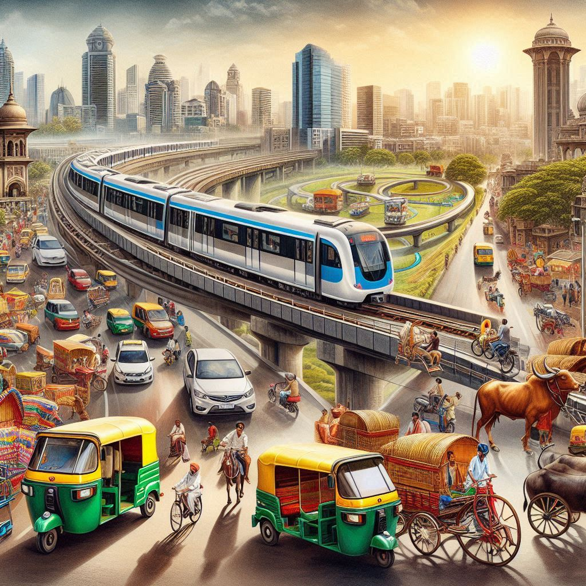
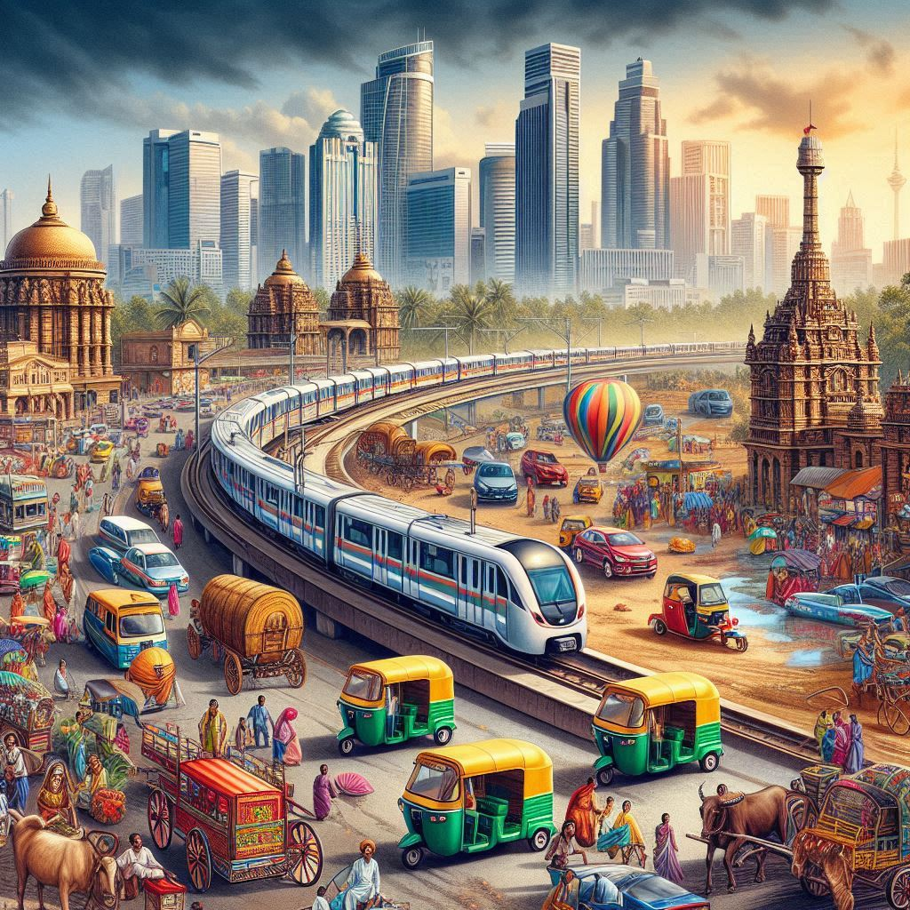

Transportation in Karnataka
Karnataka offers a variety of transportation options, catering to locals and tourists. The state's infrastructure supports road, rail, air, and water transport. Here's a brief overview:
1. Road Transportation
- Public Buses: Operated by KSRTC, providing services like Volvo buses, Airavat (luxury), and Rajahamsa (semi-luxury) for intercity travel.
- Private Buses: Operated by various private operators for intercity travel.
- Rickshaws: Common mode of short-distance transport in urban areas.
- Taxis and Cabs: Available through prepaid services and ride-sharing apps like Ola and Uber.
2. Rail Transportation
- Bengaluru Railway Station: Main station, serving long-distance trains.
- Mysore and Hubli Railways: Important stations with connections to neighboring states.
3. Air Transportation
- Kempegowda International Airport (Bangalore): Largest airport in Karnataka, with both domestic and international flights.
- Mangalore International Airport: Serves the coastal region with international flights.
- Hubli and Belagavi Airports: Smaller airports serving regional flights.


4. Water Transportation
- Ferries: Services connecting islands like St. Mary's Island and Karwar.
- Ports: New Mangalore Port handles cargo and shipping services.
5. Cycling and Walking
In urban areas like Bengaluru, cycling and walking are becoming popular modes of transport due to environmental concerns and traffic congestion. Initiatives such as cycle-sharing programs and dedicated cycling lanes are being introduced.
6. Future Transportation Developments
Plans for new metro rail systems in Bengaluru and other cities, along with smart bus services and electric vehicles, are part of Karnataka’s vision for a sustainable and efficient transportation future.
Conclusion
Transportation in Karnataka is evolving, with diverse options available for easy navigation. Ongoing infrastructure projects promise further improvements, making travel in the state more convenient and accessible.